消失之前
中国城市旧事物影像
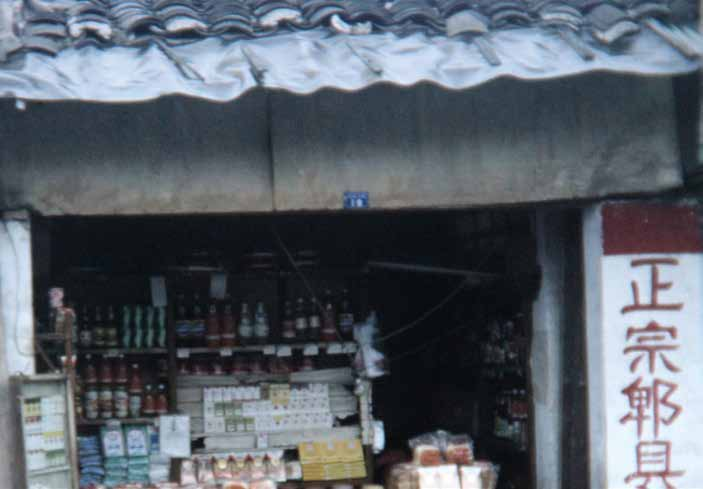
中国城市旧事物影像

正在消失的城市旧事物
有些东西并没有突然消失，
只是我们已经很久没有注意它们。
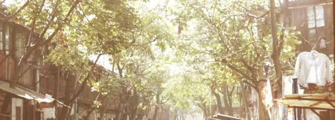
01
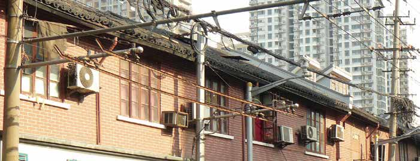
02
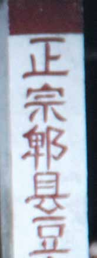
03
陈列、修补与日常的尺度
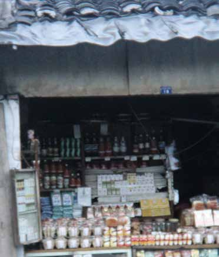
04
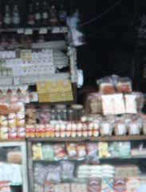
05
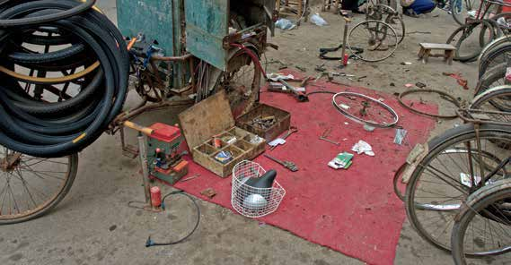
06
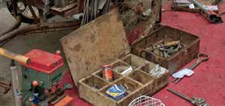
07
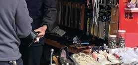
08
电话、书信与纸上的旅程
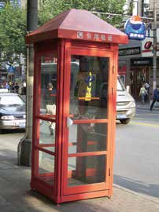
09
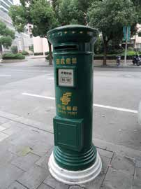
10
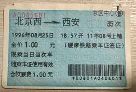
11
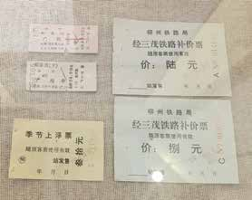
12
木纹、漆面与被触摸过的时间
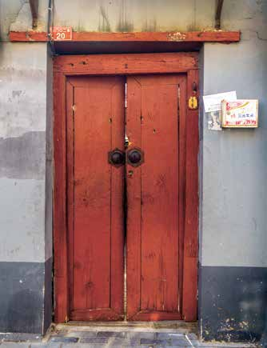
13
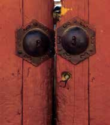
14
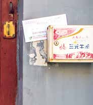
15
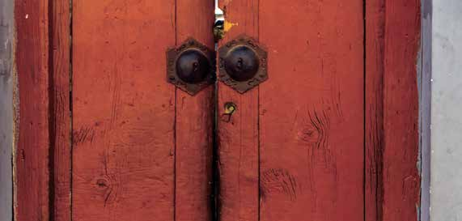
16
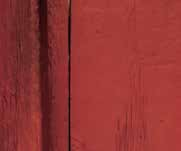
17
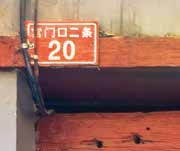
18
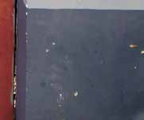
19
人与物的关系，使记忆继续发生
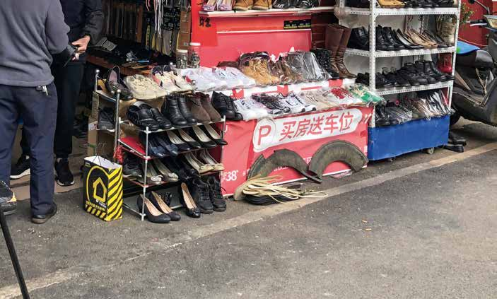
20
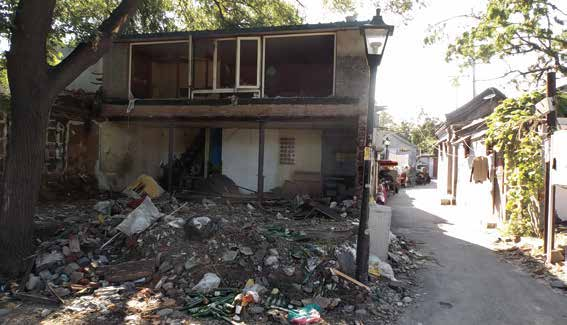
21
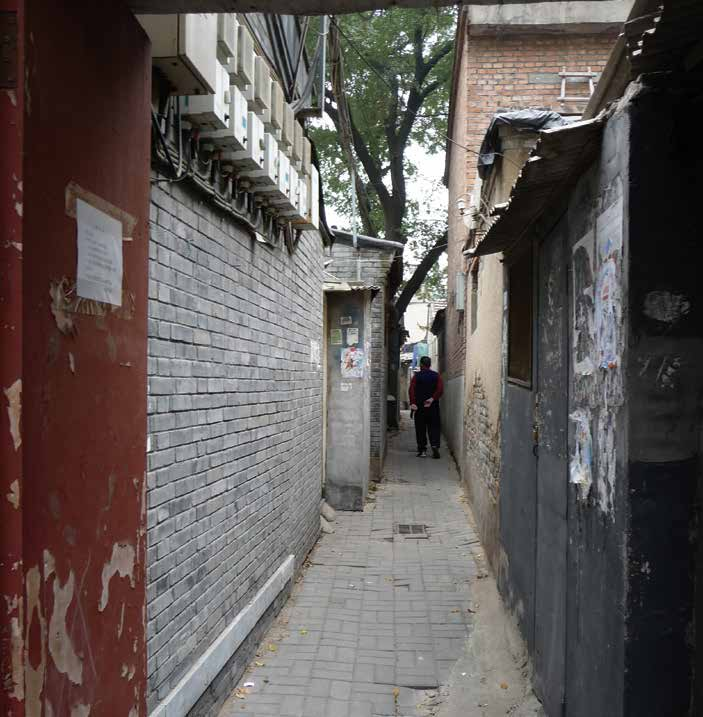
22
看见，
是记住的开始。
消失之前
中国城市旧事物影像
图片从用户提供的 PDF 中原样提取并按原书顺序重编。原摄影者与授权信息见源文件。